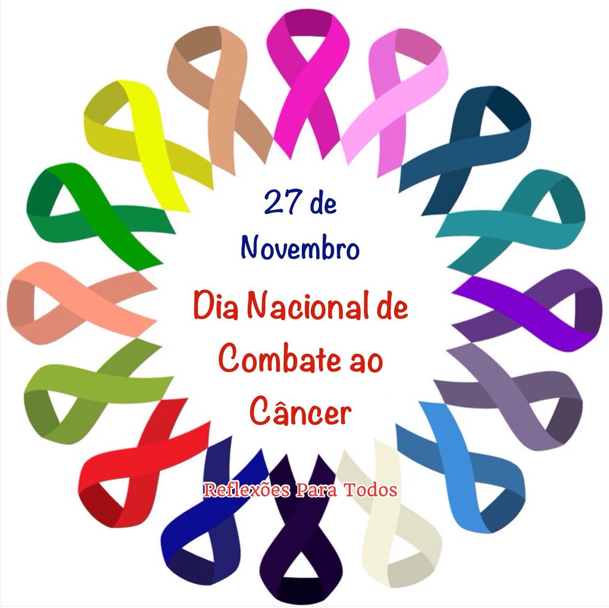

AAPEC • Barra Velha - SC
Acolher, apoiar e fortalecer pessoas.
Uma comunidade de apoio para portadores e ex-portadores de câncer, familiares, voluntários e pessoas que desejam contribuir.
Quem somos
Uma associação construída pelo cuidado e pelo senso de comunidade.
A AAPEC foi idealizada em setembro de 2005 e fundada em 22 de junho de 2006, em Barra Velha/SC. É uma entidade civil assistencial, sem fins lucrativos.
Nossos serviços
Suporte para diferentes necessidades
Os serviços foram organizados para facilitar a navegação e tornar as informações mais acessíveis.
Auxílio com deslocamento
Para consultas, tratamentos, exames, cirurgias e outros atendimentos.
Saiba mais →Grupo de apoio
Espaço de acolhimento e fortalecimento para pacientes.
Saiba mais →Apoio jurídico
Orientação e apoio jurídico para pacientes e voluntários.
Saiba mais →Empréstimos
Cadeiras, bengalas, muletas, andadores e outros equipamentos.
Saiba mais →Assistência material
Auxílio quando há incapacidade para a própria subsistência.
Saiba mais →Bem-estar
Massoterapia, Reiki, Grupo de Vozes e outros espaços de cuidado.
Saiba mais →Prevenção
Informação também é uma forma de cuidado.
A AAPEC participa de campanhas de prevenção ao câncer ao longo do ano, levando informação e conscientização à comunidade.
- Setembro Verde
- Outubro Rosa
- Novembro Azul
- Dezembro Laranja

Faça parte dessa rede de apoio.
Existem diferentes formas de contribuir com a AAPEC.